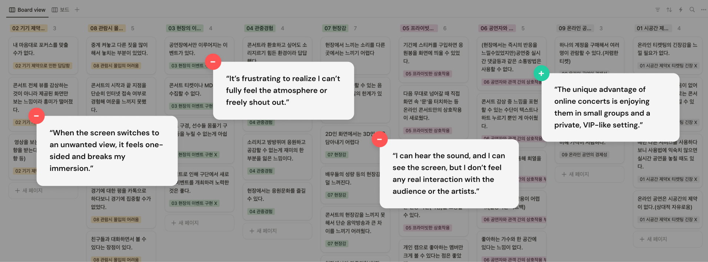
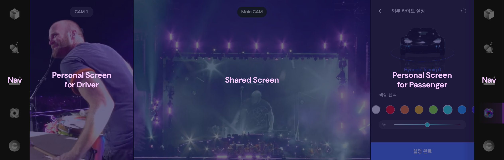
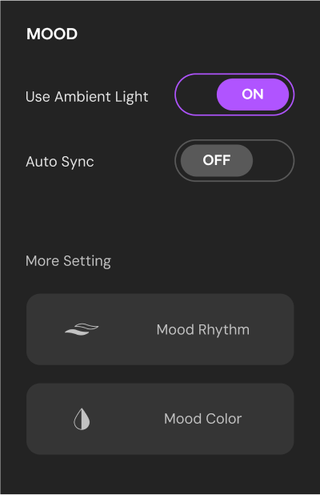
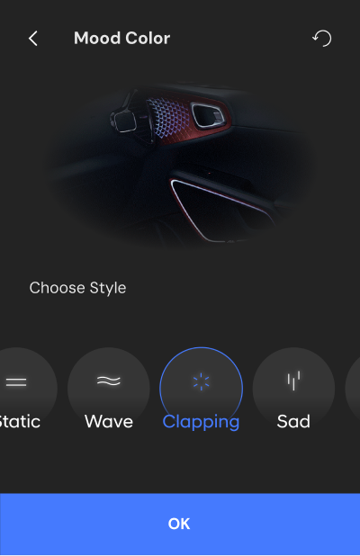
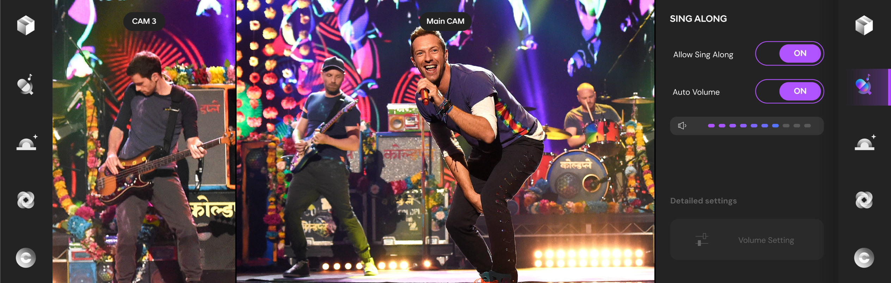
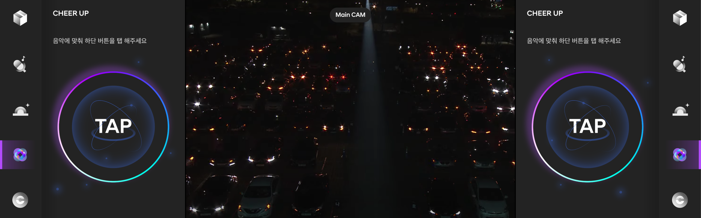
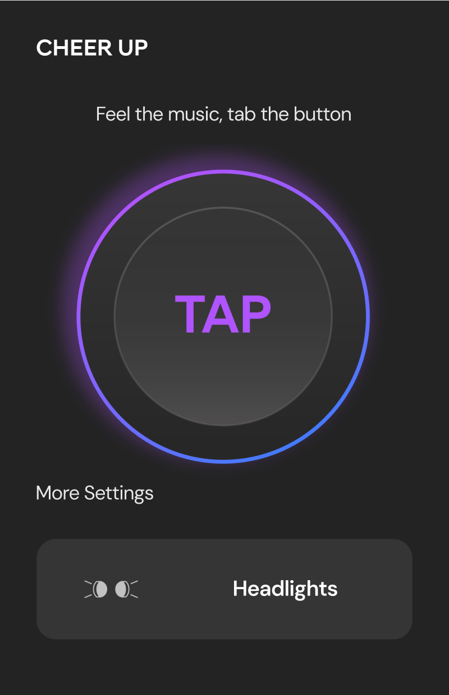
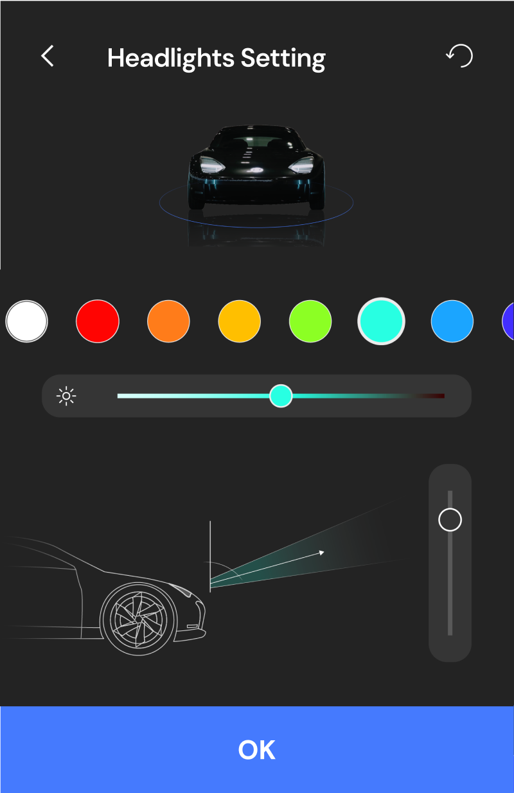

Led the UX design for the Connected Smart Car Project, focusing on safety and joyful commuting experiences
for children in a fully autonomous shuttle bus. As the UI Designer and team leader, I managed the entire UX
process, from user research and journey mapping to developing key features such as personalized boarding
safety guides and real-time status sharing. Collaborated with GUI designers to ensure cohesive visual
integration. This project was ranked top among six competing teams.
Role&Contribution
User Research
UX Design
UI Design
Presentation
Course
Amoeba Co., Ltd UX Academy 7th
Process
Desk Research
We investigated trends in remote social phenomena, performing arts, and changes in the in-car environment
to define the direction of this project.
Self User Diary
We investigated trends in remote social phenomena, performing arts, and changes in the in-car environment
to define the direction of this project.
Focus Group Interview
9 participants who experienced untact performances were divided into three groups, sharing 90 comments
that we organized into 8 key insights.

Key Findings
Trend.
Drive-in concerts will likely become a lasting part of concert culture, supported by the growth of
electric vehicles and display technology.
Pain Point.
Current contactless concerts lack presence and immersion, making full engagement difficult.
Needs.
Users want more options to customize their experience, like selecting views or adjusting settings on
their own devices.
UX concept
We designed Carola, a drive-in concert service enhancing the presence and immersion missing from
traditional
contactless concerts. Leveraging the trend of wide displays in the automotive industry, it creates a joyful
experience where passengers can enjoy concerts both together and individually.

Key features
Stage Sync, bring stage mood into the car
When Automatic Sync is activated, the in-car lighting adjusts in real-time to match the
stage lights and
effects.
Both the driver and passengers can individually control the ambient lighting on their respective
sides of the vehicle.
Auto-Sync


Personal Setting - Mood Rhythm / Mood Color
Sing Along, turn up the real sound
When the driver or passenger enables Sing Along, they can share their in-car sound with
others, capturing the live concert atmosphere. Users can adjust the volume balance between the original
concert sound and the audience’s sing-along.

Fan Mode, cheer loudly for your artist
When Fan Mode is automatically activated by the artist, users can see a front-facing view of
the cars and tap in the personal area to cheer.
If users manually activate Fan Mode, they can customize the color, brightness, and angle of the
headlights, allowing them to cheer for the artist with their preferred lighting anytime during the
concert.



Personal CAM, choose your favorite view
While main camera view on the shared screen is fixed, driver and passenger can switch the
view just by tapping the personal areas. Users can choose to focus on favorite artists or preferred view
to enhance their enjoyment.